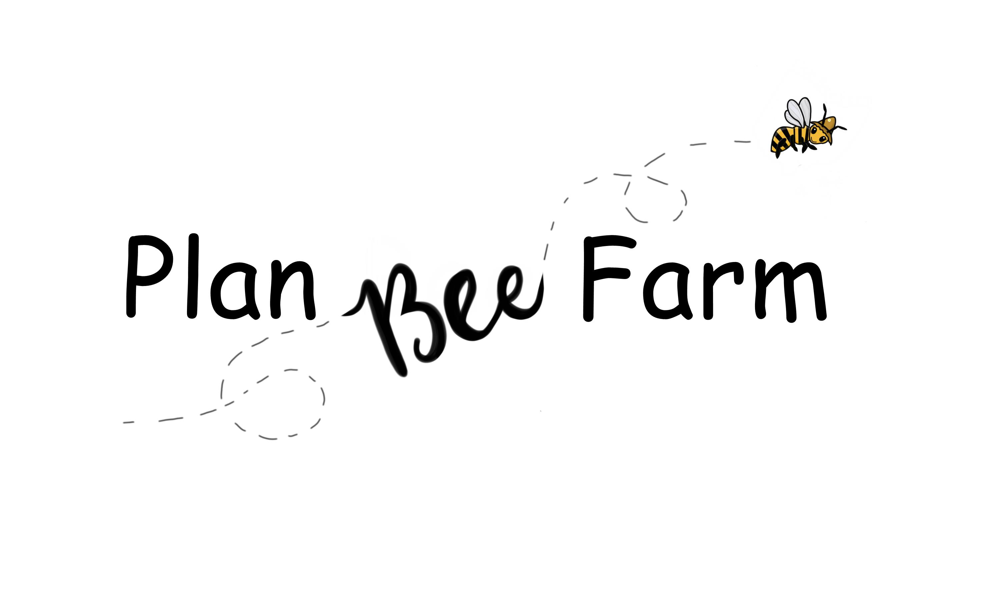
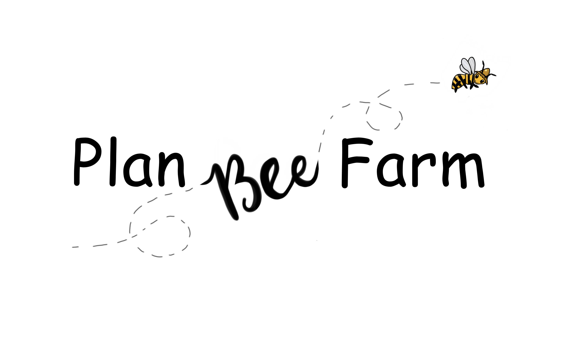
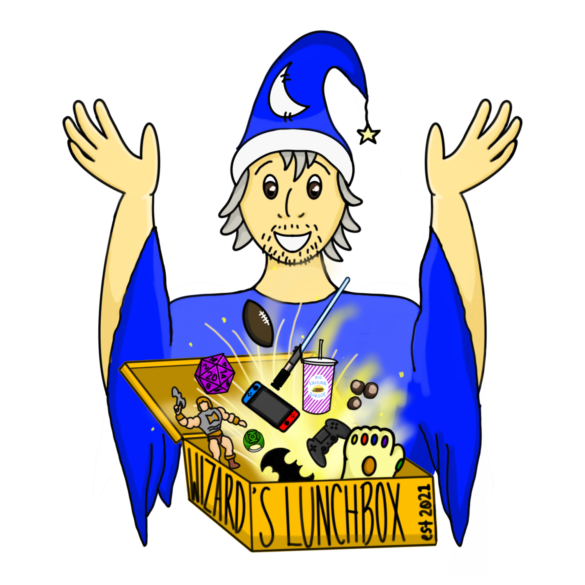
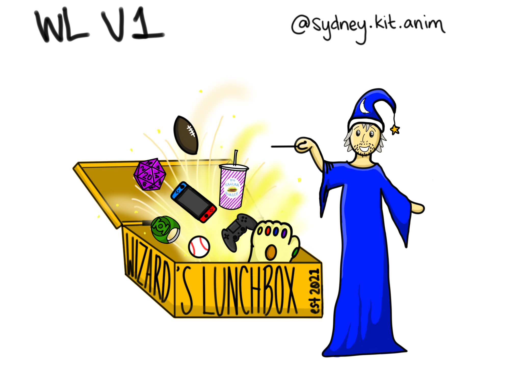

Logo Design
Plan Bee Farms
The owners of Plan Bee Farms reached out to me wanting a logo for their new business. With a page of initial requirements, including a bee within the ohio outline and daisies, and multiple conversations we were able to work together to get them their perfect logo.
The above image is the official logo. The following shows the progression of the logo.
Other versions
 

Wizard's Lunchbox
The owner of Wizard's Lunch box wanted to start up their company with a unique logo. It started off with a recreation of their initial design then was later updated to be their final logo. 